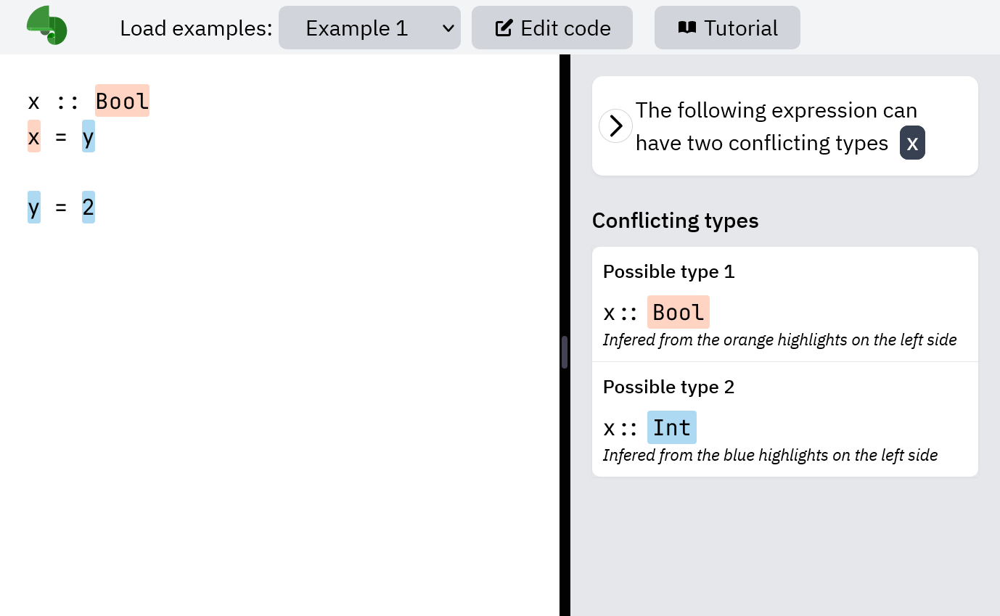

Introduction to Chameleon
This study is designed to study the effectiveness of different types of error messages in the Chameleon type checking tool. Chameleon is a tool we have developed to help programmers identify and solve Haskell type errors.Chameleon Window Layout
Chameleon consists of an and a



Uncertain expressions and cards
One important feature of Chameleon is to show all the 'uncertain' expressions as a list of . Clicking on a card activates it. The is black, are white. This feature can be enabled by clicking the or pressing tab key.


Possible types
An uncertain expression is an expression can be typed in . We refer to them as and .


Highlights
Highlights are fragments of code with . Highlights can be either or . They are the parts of the source code from which Chameleon deduces the possible types.


Highlights (color-switching)
Highlights switch color (blue to orange or vice versa) when the active card (or deduction step ) changes. Notice the highlight of y on the second line changes color when activating .

Deduction step (UI)
Deduction step is another important feature of Chameleon. A deduction step is displayed as an in the editor window. It comprises (one blue and one orange) outlined in black, and showing how the two are related to one another. Deduction step can be enabled by clicking the second or pressing the tab key.


Deduction step (control)
Each card contains one or more . Clicking on a step button activates the step. Each card can associate with 0 or 1 and any number of .


Deduction step (example)
When activating a step, some highlights switch color. The message in the text box changes as well. For example, activating , , and result in the editor window showing different deduction steps.


Modes
Chameleon can be configured in three modes based on the features we illustrated, namely, basic mode, (basic mode with uncertain expression cards), and (balanced mode with deduction steps). You will start off with different modes throughout the study. However, you are free to switch between modes at any time by pressing the tab key or clicking the chevron buttons.